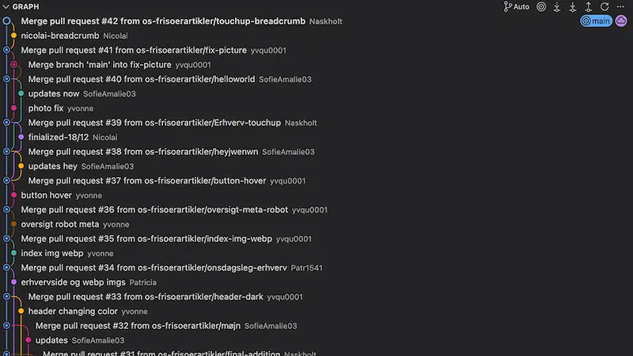

Github
At arbejde sammen i en gruppe via GitHub var markant anderledes og krævede flere tilpasninger for at fungere optimalt.
Branching var tidligere blevet introduceret, men kun i forbindelse med individuelt arbejde, hvor fejl ikke havde samme konsekvenser. Flere gange kom gruppemedlemmer – undertegnede inklusiv – til at arbejde direkte i main-branchen, hvilket ikke var hensigtsmæssigt.
Alle fejl blev dog rettet, og erfaringen førte til en fælles forståelse af vigtigheden af aldrig at arbejde direkte i main.